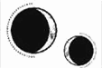

CAPÍTULO 70
Julius 1789
Al asomarse entre las cortinas, Helena vio que traían más sirvientes de la ciudad, tanto vivos como muertos. Kaine había cerrado con llave la puerta de su dormitorio para asegurarse de que no recibiera ninguna visita indeseada, pero dejó a una de las doncellas dentro con ella.
Helena no se había dado cuenta hasta ese momento de lo pesada que era la puerta ni de lo bien protegida que estaba.
Los primeros vehículos llegaron a última hora de la tarde. Le resultaba gracioso ver entrar a los inmarcesibles en la casa del mismísimo asesino al que tanto temían.
Intentó no preocuparse demasiado. La velada no parecía haber inquietado a Kaine lo más mínimo, pero sabía que era muy buen mentiroso.
Mientras se desarrollaba la celebración, Helena se esforzó por concentrarse en encontrar la manera de revertir la estructura del sello de Morrough. Pero entonces la sirvienta que hasta ese momento había permanecido quieta como una estatua se puso de pie de repente y recogió apresuradamente todos los libros y las notas de Helena para meterlos debajo de la cama.
Alguien se acercaba.
Acababan de esconder los últimos papeles y de asegurarse de que todo había quedado bien oculto bajo el faldón de la cama cuando el sonido del hierro al moverse inundó la estancia. Helena se subió de un salto a la cama y se tumbó sobre el costado, justo antes de que la puerta se abriera y apareciera Stroud seguida de Kaine.
—No entiendo de qué va a servir esto —decía él mientras Helena los miraba fingiendo estar confundida—. Ya sabes lo delicado que es su estado de salud.
—Tenemos muchas cosas delicadas entre manos ahora mismo —replicó Stroud, que se acercó a Helena para sacudirla—. El Sumo Nigromante ha dejado muy claro que debemos proyectar una imagen fuerte. Los asesinatos a los que nos hemos enfrentado han hecho que la sensación de invulnerabilidad de nuestros hombres se tambalee y, si permitimos que el miedo eche por tierra el régimen, todos sufriremos las consecuencias. Debemos demostrar que encontraremos una solución pronto.
—¿Y crees que pasear por la casa a una prisionera embarazada que está aquí claramente para ser interrogada calmará las aguas?
—Creo que explicar el motivo de su embarazo lo hará. La paranoia no les deja confiar en nuestra palabra, pero eso cambiará cuando la vean. La chica fue la última alumna que el principado acogió bajo su protección. —Stroud la miró—. Levántate y ponte algo que muestre la barriga.
Su estado apenas era evidente cuando estaba desnuda, así que Helena dudaba que tuviera alguna prenda que pudiera cumplir con lo que la mujer pedía. Y eso fue más evidente todavía cuando se puso de pie.
—Ay, por todos los cielos. —Stroud se acercó al armario, sacó un camisón y se lo metió a Helena por debajo del vestido para que su vientre pareciera más distendido—. Hala, vamos.
La mujer tiró del brazo de Helena con fuerza y la arrastró hacia la puerta. Ella miró a Kaine, pero no había nada que hacer.
El camino hasta el ala principal de la casa fue más largo y, al mismo tiempo, más corto de lo que Helena recordaba. Se le formó un nudo en el pecho al llegar al amplio vestíbulo principal, pero se esforzó por mantener la respiración controlada cuando la metieron en la amplia estancia donde había visto a Kaine por primera vez en Puntaférreo.
—Ni se te ocurra abrir la boca —le ordenó Stroud clavándole los dedos en el brazo.
Todos los invitados se volvieron cuando Stroud entró con Helena, que se sintió fuera de lugar al instante. Ninguna norteña respetable se dejaría ver en público con el cabello suelto y claros signos de embarazo.
La respuesta ante su apariencia fue un silencio absoluto. Helena recorrió la estancia con la mirada y reconoció un puñado de rostros, entre los que se encontraban Crowther y una malhumorada Aurelia.
«No, es Atreus», se recordó. Su piel grisácea estaba salpicada de manchas en las sienes y ahora llevaba anillos de ignición.
—¿Este es el proyecto secreto? —dijo un hombre con molesta incredulidad. Helena reconocía su voz. Tenía entradas y unas largas patillas—. ¿Este es el proyecto del que hablan todos los periódicos del país?
—Por supuesto que no —dijo Stroud con un ligero tono defensivo—. ¿Cómo iba el Sumo Nigromante a anunciar a bombo y platillo sus verdaderos planes en los periódicos? Esta prisionera fue confinada aquí por otro motivo y tú eres uno de los pocos privilegiados que van a saber por qué. Como seguramente recordaréis, esta es la estudiante extranjera que los Holdfast se tomaron la gran molestia de traer a Paladia para que estudiara en la Academia.
Varios rostros se ensombrecieron ante aquel recordatorio.
—El Sumo Nigromante ha descubierto que la chica posee una manifestación única de la resonancia y ha mostrado un gran interés por cultivarla. Una vez completado el proceso, el poder del Sumo Nigromante alcanzará unos niveles nunca vistos.
—Entonces ¿admites que a nuestro señor le pasa algo? —dijo un liche al otro lado de la estancia.
A Helena se le paró el corazón al ver que era Sebastian Bayard, con los ojos y el cabello claros y la piel de un tono gris.
Stroud frunció el gesto.
—Lo que estoy diciendo es que el Sumo Nigromante ha vencido a la mortalidad, y eso es algo con lo que ninguna otra alma en este mundo había llegado siquiera a soñar. Cuando el proyecto culmine, pues estoy segura de que saldrá adelante, será beneficioso para todos nosotros. Puede que algunos de vosotros recordéis que, durante la guerra, Bennet investigó cómo colocar talismanes en cuerpos vivos. Era uno de nuestros principales objetivos. —Varios liches asintieron—. En aquellos primeros intentos no tuvimos éxito porque las restricciones de la guerra nos obligaron a centrar nuestros recursos en prioridades más urgentes. Sin embargo, hemos dado con un nuevo método en el que el Sumo Inquisidor y yo hemos estado trabajando juntos.
»El estado físico del Sumo Nigromante está… decayendo, pero nadie se atrevería a dudar de su poder. Su intención es transferir su alma a un nuevo cuerpo y así alcanzar un poder inimaginable. Cuando él haya dado ese paso, os concederá el privilegio de hacer lo mismo.
—¿Y cuál será su nuevo cuerpo? —preguntó el primer hombre que había hablado.
Stroud sonrió y empujó a Helena para que todo el mundo la viera.
—El que la prisionera engendrará para él.
Los invitados la estudiaron con atención. El corazón de Helena latía con fuerza; estaba tan concentrada en mantener la calma que ni siquiera alcanzaba a oír lo que estaban diciendo. Notaba la rabia de Kaine vibrando bajo su piel.
Se oyó una carcajada burlona.
La estancia se desdibujó.
—No penséis en el cuerpo como en un bebé —dijo Stroud con tono brusco y en voz lo bastante alta como para que Helena la oyera por encima del estruendo de sus latidos—. No es más que materia humana con la resonancia adecuada fluyendo por sus venas.
La mujer se sonrojó visiblemente. Era evidente que había esperado que su público reaccionara con admiración, no que se rieran de ella. Volvió a tirar de Helena hacia atrás sin ninguna delicadeza.
—He trabajado con Bennet en el proyecto de las quimeras y tengo experiencia con la aceleración del crecimiento. En un par de meses, el feto será viable y tendré los materiales necesarios para diseñarle un nuevo cuerpo a nuestro líder que disponga de la resonancia que necesita. Una vez que haya alcanzado su nueva forma, permitirá que aquellos que le han sido leales reciban también nuevos cuerpos.
Varios de los liches se pusieron alerta con evidente anhelo.
—¿Así que para eso era tu programa entonces?
Helena se estremeció al oír la voz de Crowther emerger desde el fondo de la estancia, donde Atreus estaba todavía junto a Aurelia. Parecía tenerle mucho más aprecio a la nueva señora Ferron que su propio hijo.
—El beneficio económico del procedimiento es legítimo —aseguró Stroud con actitud remilgada—. Aunque admito haber tenido otros motivos.
—Un momento. —La voz de Aurelia surcó la estancia y le recordó a Helena al sonido del cristal al romperse—. ¿Quién es el padre?
—El Sumo Nigromante, por sup… —El inmarcesible que había hablado se interrumpió y, al contemplar a Helena, pareció pensarse mejor su respuesta.
—Sabía que estabas aprovechando para echarte una canita al aire con ella, Ferron —dijo otro hombre, con la cara grasienta y un espeso bigote, que acompañó sus palabras con una seca carcajada.
Las mejillas de Aurelia adoptaron una tonalidad carmesí.
—La decisión se tomó en base a la resonancia. El Sumo Nigromante decidió que sería el candidato ideal —dijo Stroud con tono conciliador—. Os aseguro, señora Ferron, que la cooperación de vuestro esposo no afecta a…
Varias personas rieron.
—¡Fuera de aquí! ¡Marchaos todos! —gritó Aurelia, que se había puesto peligrosamente pálida.
Luego, cogió lo primero que encontró, un jarrón, y se lo lazó a Helena a la cabeza, pero Stroud le tiró con fuerza del brazo y la porcelana pasó volando junto a ella para acabar estrellándose contra la pared.
A Kaine, que se había detenido a su lado, le brillaban tanto los ojos que casi parecían blancos.
—Coincido. —Su voz hizo vibrar el aire como una onda de resonancia—. Si alguien sigue dudando sobre el poder o la estabilidad del régimen, le animo a venir a hablar conmigo en privado.
Tras una pausa, varios de los inmarcesibles farfullaron una disculpa y se dirigieron hacia la puerta. Mientras la estancia se vaciaba, Stroud se encaró con Kaine.
—El Sumo Nigromante dejó muy claro que esta iba a ser una reunión diplomática, no una oportunidad para que vos los obligarais a obedecer a base de amenazas.
Los ojos de Kaine seguían resplandeciendo.
—Lo único que funciona con ellos es el poder y el miedo. No hay forma de razonar con quien ve sus privilegios amenazados. Ahora, si me disculpas, tengo un desagradable conflicto doméstico del que encargarme. Puedes irte y decirle a nuestro amado líder que sus seguidores seguirán cumpliendo órdenes sin rechistar porque saben que es lo único que los mantiene con vida.
Stroud puso mala cara, pero se marchó con la cabeza bien alta.
Helena miró a los rezagados que todavía quedaban en la estancia y se sorprendió al reconocer dos rostros más. Eran las únicas dos mujeres aparte de Stroud y Aurelia. Habían permanecido cerca de las ventanas todo el rato y ambas eran agraciadas, aunque una tenía la piel ligeramente gris y una expresión distante en su rostro de facciones delicadas. La otra tenía un aspecto muy astuto, como de un zorro, y contemplaba a Helena mientras se mordía el labio inferior.
Eran Ivy y Sofia Purnell.
Ivy miró a Kaine con expresión confusa y luego se volvió hacia Helena como si quisiera decir algo, pero terminó bajando la vista y agarrando a Sofia de la mano para sacarla de la estancia.
Por fin, Helena y Kaine se quedaron a solas con Atreus y Aurelia.
—Llevadla a su habitación —ordenó Kaine por encima del hombro mientras pasaba junto a Helena para acercarse a su familia.
Dos sirvientes dieron un paso adelante para obedecer, pero Aurelia los interrumpió:
—¡No! Que se quede. Siempre la tienes escondida para asegurarte de que eres el único que se acerca a ella. Al final ha resultado que mis sospechas eran ciertas.
La expresión de Kaine se tensó.
—Como ya te ha dicho Stroud, tan solo seguía órdenes del Sumo Nigromante. Te aseguro que en absoluto fue placentero ni para la chica ni para mí.
—Pues qué pena —dijo Atreus con la voz grave de Crowther. Arrastró con languidez sus ojos lechosos hasta Helena mientras se acercaba, acompañado de un desagradable olor a químicos astringentes y lavanda—. Tenía la esperanza de que esto al menos te animara a cumplir con el deber hacia tu familia. Sé de buena tinta que frecuentaste con regularidad cierto establecimiento durante la guerra, así que experiencia y habilidad no te falta. La única explicación que me queda es que no estás motivado.
—Tengo mejores asuntos que atender que preocuparme por asegurar tu legado —dijo Kaine con un brillo cruel en la mirada.
Atreus lo estudió con mala cara antes de avanzar sin previo aviso hacia Helena, que se encogió en un acto reflejo orientando el cuerpo hacia Kaine.
—Para ser tu prisionera, no parece tenerte mucho miedo —señaló el hombre desviando la atención rápidamente hacia su hijo.
Kaine agarró a Helena y la apartó de su padre.
—Bueno, eso es gracias a Aurelia. Después de que se pusiera hecha una furia y la atacara, yo terminé convertido en su heroico salvador. —Kaine le dedicó una sonrisa a Helena con una mirada burlona y fría como el hielo—. ¿No es así?
La chica no tuvo que fingir el estremecimiento que le recorrió el cuerpo. El corazón le latía a toda velocidad y la estancia le daba vueltas.
—Es hora de que la devuelva a su habitación. Ya sabéis dónde está la puerta.
Kaine se dio la vuelta para marcharse y tiró de Helena tras él, pero Atreus volvió a hablar:
—Puede que el Sumo Nigromante te haya dado manga ancha antes, pero has sobrestimado tanto tus habilidades y tu papel en la guerra que ahora estás dejando que te use como si fueras su perrito faldero, dejando que te trate como tal. Parece que matar es lo único que se te ha dado bien en la vida. —Kaine mantuvo una expresión impasible, pero Helena lo sintió estremecerse—. Puede que las amenazas te sirvan con los demás, pero yo no te tengo miedo. Has ido demasiado lejos y lo que te espera ahora será una caída inmensa. —A Kaine se le crisparon los dedos contra el brazo de Helena—. Esta es mi casa y, ahora que debo encargarme de las tareas que has sido incapaz de completar, ya no puedes darme órdenes. Cuando haya acabado, dado que esa servil obediencia parece ser la única cualidad que posees, tal vez le pida a nuestro líder que te obligue a engendrar un heredero.
Kaine no lo miró.
—Haz lo que te venga en gana. A mí me da igual.
Salió rápidamente y no se detuvo hasta que llegaron al ala oeste de la casa, donde Atreus y Aurelia quedaban ya muy lejos de ellos. Solo entonces se giró y acunó el rostro de Helena entre ambas manos mientras miraba sus ojos con atención. También notó su resonancia en las terminaciones nerviosas cuando la ayudó a ralentizar los irregulares latidos de su corazón.
—Lo siento —dijo apoyando la frente contra la de ella—. No esperaba que Stroud fuera a hacer algo tan estúpido.
—Da igual. Ya ha pasado. ¿A qué se refería tu padre con lo de que se está teniendo que encargar de las tareas que tú no has sido capaz de completar?
—No es nada. Venga, volvamos a tu habitación.
—¿Qué ha pasado? —insistió Helena.
Kaine exhaló.
—Ahora es mi padre quien se está encargando de dar caza al asesino.
—¿Y eso qué significa?
—Nada. Porque no va a descubrirme. Shiseo regresará en menos de una semana.
Helena recibió aquella noticia como un puñetazo en el estómago. Sabía que se estaba quedando sin tiempo, la oscuridad del cielo se lo recordaba cada noche, pero saber que Shiseo volvería pronto hacía que todo pareciera mucho más definitivo. Permaneció en silencio hasta que llegaron a la habitación.
—¿Conoces a la chica que estaba allí con su hermana?
—Ella fue quien dejó entrar a todo el mundo en la Academia —dijo Kaine entornando los ojos.
—Era una de las chicas de Crowther. Lo mató porque su hermana murió cuando rescatamos a Luc —explicó Helena con un asentimiento—. Está convencida de que la necrómata que la acompaña sigue viva.
—A esa la reanimó el propio Morrough. Casi nunca se toma tantas molestias con los cadáveres, pero eso lo explica todo. La habría matado ya, aunque no me lo ha puesto nada fácil. Esa necrómata es la única que tiene y nunca se separa de ella.
Puntaférreo volvía a parecer un lugar aterrador con la presencia de Atreus y Aurelia.
Como su habitación daba al patio, Helena siempre estaba al tanto de las idas y venidas de todos. Vio a Kaine y a su padre de pie ante la escalera de entrada cuando llegó un camión cargado de prisioneros que fueron conducidos a uno de los cobertizos.
Kaine se dispuso a alejarse, pero Atreus lo llamó con brusquedad y él se dio la vuelta despacio para entrar con su padre en el edificio.
Los gritos que siguieron atravesaron los cristales de las ventanas y flotaron por los sinuosos pasillos de la casa. Y no parecían tener fin. Helena corrió las cortinas y se agazapó en el extremo más alejado de la habitación para tratar de ignorarlos. Tenía demasiados recuerdos relacionados con gritos como aquellos.
Al cabo de un rato, notó el contacto de una mano y se encogió de miedo, pero al levantar la cabeza descubrió a Kaine a su lado. Lo estudió con atención. Tenía el cabello mojado, así que debía de haber salido de la ducha hacía poco.
Los dos se miraron sintiendo el peso de la situación sobre los hombros.
—¿Ha… ha dicho alguien algo que pudiera incriminarte? —preguntó Helena con voz ronca.
Un destello surcó la mirada de Kaine.
—No, ninguno sabía nada.
Helena tragó saliva con fuerza.
«Cada palabra, cada vida. Todo ha sido por ti».
No se veía capaz de hablar.
—Es tarde. ¿Quieres comer algo? —le preguntó Kaine al final.
Ella levantó la vista y vio que había dejado una bandeja en la mesa que había al otro lado de la habitación. Las sombras alargadas que lo bañaban todo le indicaron que debía de haber pasado todo el día agazapada en aquel rincón.
Le temblaba la barbilla y notaba un nudo en la garganta.
—¿Por qué está haciendo eso aquí? —preguntó, como si el lugar donde torturaban a los prisioneros cambiara lo horrible que era el hecho en sí.
—Mi padre cree que hay espías entre los inmarcesibles y que por eso el asesino es tan eficiente. Está convencido de que Puntaférreo es el único lugar verdaderamente seguro que queda. —Bajó la vista—. Deberías comer algo. Yo tengo que cenar con Aurelia y él esta noche.
—¿Volverás después? —le preguntó agarrándolo de la mano cuando ya se disponía a ponerse de pie.
Sus ojos plateados refulgían en la oscuridad.
—Si tú quieres, sí.
Cuando todo estuvo en silencio, sacó los bocetos con los sellos y las notas que había recopilado para analizarlos, modificar algunos de los componentes del diseño que había desarrollado y trazar los patrones con los dedos entrecerrando los ojos, mientras intentaba percibir la energía. Trataba de recordar lo que había sentido al notarla fluir correctamente.
No existían obras ni fuentes de referencia que mencionaran sellos alquímicos diseñados para la animancia, así que dependía por completo de la información suelta que había recopilado y de su propia experiencia.
Se podían tardar años e incluso décadas en perfeccionar un sello.
En el mejor de los casos, ella tendría una única oportunidad para hacerlo bien.
—Shiseo llegará al este de Novis en unos días —le dijo Kaine mientras caminaban por el laberinto de setos para que nadie los viera desde la casa y para que Helena no oyera los gritos repentinos que escapaban del cobertizo donde estaban los prisioneros—. Lo tendremos aquí esta misma semana.
A Helena le dio un vuelco el corazón.
—Ah.
Sabía que se lo había dicho para que empezara a asimilar lo que se avecinaba, pero, en lugar de darle tiempo…, sintió como si le arrojaran un jarro de agua fría.
Tragó saliva varias veces.
—¿Podría acompañarte a la biblioteca? Me gustaría asegurarme de que no he pasado nada por alto.
—Como quieras.
Una vez allí, Helena notó el peso de su mirada sobre ella mientras recorría sin prisa los pasillos entre las estanterías, buscando viejas crónicas sobre las cualidades de la alquimia. Cuando Kaine la observaba, en sus ojos se reflejaba una tristeza tan cristalina que Helena no entendía cómo no la había visto antes.
Sabía que, para él, la investigación no hacía más que robarles un valioso tiempo que podrían estar compartiendo juntos. Si no encontraba nada, habría desperdiciado cada segundo. Pasaría los pocos momentos que les quedaban buscando una solución que quizá nunca había existido.
Aun así, sacó otro libro de una estantería con los dedos temblorosos y lo añadió a la pila.
—Estos también.
—Creo que… he conseguido descifrar el sello y encontrar los materiales que necesitaré para recuperar tu alma —le dijo Helena a Kaine cuando regresó al día siguiente.
Estaba sentada al borde de la cama, con las manos vacías y sin haber tocado la comida que le habían llevado.
Kaine hizo una pausa al entrar y cerró la puerta.
—¿En serio?
Unos espasmos incontrolables se habían adueñado de la mano izquierda de Helena y el corazón le latía con tanta fuerza que sentía cada golpe como si la sacudiera desde dentro.
—Si modificamos la base del sello, podría utilizar sus componentes internos para acumular la energía mientras separo tu alma de la de los demás mediante la animancia.
—¿Pero?
Helena tragó saliva.
—Cuando Luc murió, se fue apagando poco a poco. Cetus…, es decir, Morrough lo había dejado tan maltrecho que su alma se desmoronó tras extraer al nigromante de su interior. No supe cómo… A ti te arrancaron el alma del cuerpo. Si consigo volver a metértela dentro, puede que con el tiempo se reintegre, pero tendremos que encontrar una manera de asegurarla, al menos al principio. Igual… igual que con las filacterias.
—Necesitarías que otra alma se sacrifique.
Ella asintió.
—Y tendría que ser por voluntad propia, porque, de lo contrario, el amarre no resistiría y el plan no funcionaría.
—Entiendo —fue lo único que dijo él.
—Si empiezo de cero, tal vez encuentre otra solución —dijo ella tragando saliva con la mandíbula temblorosa—. Puede que no haya abordado el tema desde el ángulo correcto.
Kaine permaneció en silencio.
Helena notó una sacudida en el pecho.
—También… he estado pensando que podríamos centrarnos en recuperar tu filacteria y marcharnos. Así tendré otro mes para seguir investigando, ¿no? Podría armar una bomba. Lo haríamos juntos, en la vieja fragua. No haría falta que desprendiera demasiado calor o que desatara una gran explosión. Si utilizamos el anulitio, una vez que hiriéramos a Morrough, podríamos quitarle la filacteria y huir. Entonces… entonces tendría tiempo para pensar en algo más.
Kaine se acercó a ella con una expresión impasible salvo por el brillo paciente de su mirada, que molestaba tanto a Helena.
—¿Crees que manejar explosivos estando embarazada es una tarea segura?
A Helena se le cerró la garganta.
—Trabajaríamos juntos. Podría explicarte cómo…
Kaine le cogió una mano y la colocó sobre las suyas para que notara cómo le temblaban los dedos. Por si fuera poco, la mano de Helena sufrió un espasmo.
—¿Quién de los dos tiene el pulso lo bastante firme como para construir una bomba?
Helena se soltó y apretó el puño con tanta fuerza que notó los metacarpianos bajo las yemas de los dedos. La estancia comenzó a dar vueltas y amenazó con tirarla de la cama, así que apoyó la otra mano sobre el colchón para mantener el equilibrio.
—Bueno, puede que si…
—Estoy agotado, Helena.
Ella levantó la vista y vio en su mirada que la guerra lo había consumido. Lo había devorado hasta los huesos y ni siquiera eso había bastado. No era más que una sombra de lo que un día fue.
Ella lo supo desde el momento en que había visto el sello grabado en su espalda. Supo que su poder acabaría empujándolo a focalizar su existencia en un único punto si sobrevivía y que nada lo desviaría de su objetivo. Kaine se lo había dejado muy claro.
No se detendría hasta que Helena estuviera a salvo, y eso lo estaba desgastando casi por completo. Él solo quería tener una meta a la que aferrarse.
A Helena le temblaron los hombros.
—Pero… yo también quiero salvarte.
—Lo sé —dijo él con suavidad—. Y, si alguien hubiera sido capaz de salvarme, esa habrías sido tú. Pero quiero despedirme de ti antes de que te vayas y la investigación te está cegando.
Entonces la estrechó entre sus brazos y apoyó la barbilla sobre su cabeza.
Pero Helena no pudo dejar de pensar. Cuando la dejó sola, retomó el estudio. Empezó de cero. Cada vez que oía que Kaine regresaba a su dormitorio, lo escondía todo y fingía haber dejado el tema apartado. Y, aunque Kaine sabía lo que se traía entre manos, ambos hicieron como si no pasara nada.
Helena lo besó. Lo empujó hasta la cama y se subió a horcajadas a su regazo mientras le enterraba los dedos en el pelo y amoldaba su cuerpo al de él, deseosa por tocar cada centímetro de su piel.
Cuando Kaine se puso a besarle el cuello, ella le soltó los botones y los cierres de la ropa hasta sentir directamente el calor de su piel. Luego, le bajó la camisa por los hombros y guio sus manos hacia la cintura. Kaine se aferró a ella y le presionó los dedos contra las costillas hasta que Helena arqueó la espalda para pegarse más a él.
Helena empezó a desabrocharse el vestido, pero le temblaban tanto las manos que los botones se le escapaban de entre los dedos. Kaine intentó detenerla, pero ella se lo impidió.
—Quiero hacer esto —aseguró con voz trémula—. Quiero hacerlo antes de irme, habiéndolo decidido nosotros. Por favor… —se le rompió la voz—. Esto era algo nuestro… —Tragó saliva y parpadeó con fuerza—. Nos lo arrebataron, pero era nuestro.
Con dificultad, logró soltar el resto de los botones y se bajó el vestido hasta la cintura. Luego, le rodeó el cuello con los brazos y lo atrajo hacia sí para besarlo.
Permaneció encima de él, con los muslos a cada lado de sus caderas, cuando sus cuerpos se unieron. Kaine la agarró de la cintura, pero no la empujó ni la forzó a moverse a otro ritmo que no fuera aquel para el que estaba preparada. Solo la sostuvo. Dejó escapar un leve gruñido cuando Helena movió las caderas hacia delante.
Ella intentó no pensar en el pasado ni comparar aquel momento con otros. Se esforzó por disfrutar del presente, de anclarse a aquel encuentro, pero le resultaba tan familiar…
Recordaba que sus relaciones habían sido de esa manera antes: lentas e íntimas. Recordaba la ardiente reverencia que le transmitía Kaine con su contacto al hacerle el amor.
Eso era lo que habían hecho siempre: el amor. Era lo que siempre habían compartido.